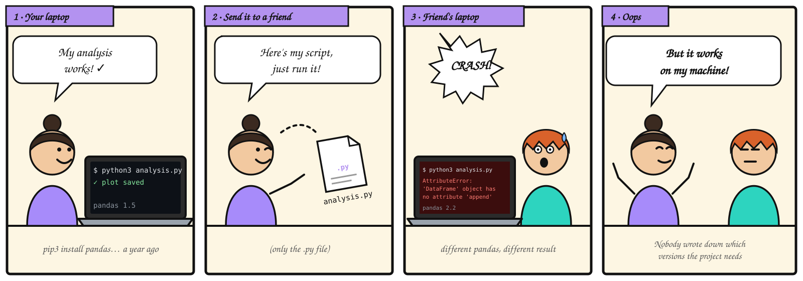
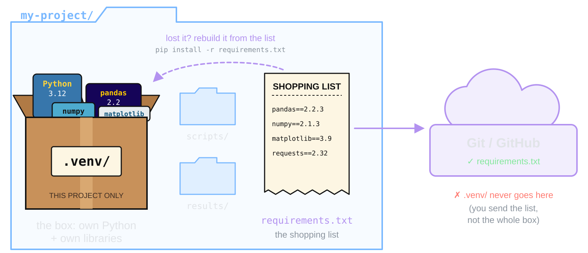
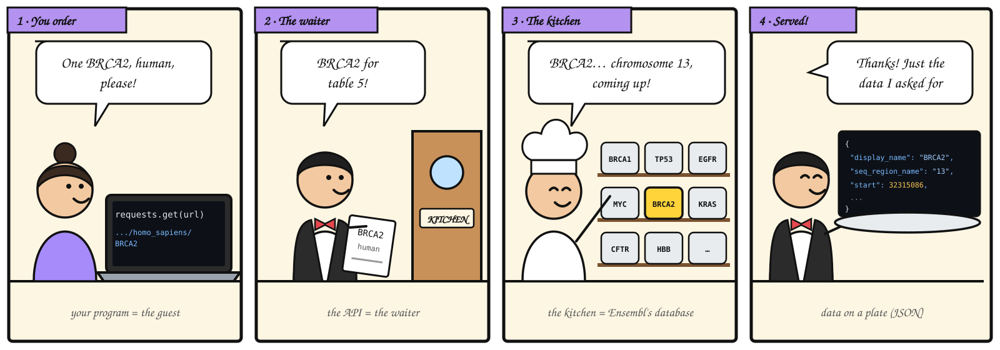

Programming and Computing Basics · KSE 2026
⏱️ 5 min · your browser
Open this link in your browser:
https://rest.ensembl.org/lookup/symbol/homo_sapiens/BRCA2?content-type=application/jsonIn the chat: on which chromosome is BRCA2? How long is the gene? 🧬
| Part | Topic | Time |
|---|---|---|
| 1 | 📦 Virtual environments: your own clean box for each project | ~25 min |
| 2 | 🌐 APIs: getting data straight from biological databases | ~45 min |
| ✅ | Commit & push | ~5 min |
Both are things your final project will need 🚀

pip3 install pandas → installed for the whole computer 🌍, and the project doesn’t remember which version it needs
A box inside your project with its own Python and its own libraries.

One project = one .venv ✅
In the terminal, inside your project folder:
(.venv) $ pip install requests pandas matplotlib # only into this box
(.venv) $ pip freeze > requirements.txt # write the shopping listSomeone else (or you, on a new laptop) gets your repo:
Done for today? deactivate 👋
.venv is big (thousands of files) and specific to your computer.
Add it to .gitignore:
.venv/
__pycache__/| Goes to Git 💾 | Stays local 💻 |
|---|---|
scripts/, README.md |
.venv/ |
requirements.txt |
__pycache__/ |
⏱️ 7 min · on your own · react ✅ when done
In your repo folder:
python3 -m venv .venv(.venv) in the promptpip install requests pandas matplotlibpip freeze > requirements.txt.venv/ to .gitignorerequirements.txt and .gitignore 💾✅ Check: git status does not show .venv/
⏱️ 10 min · breakout rooms · pairs · react ✅ when both are done
Owner 🏠: git push, then paste your repo URL in the room chat
Guest 🧳: rebuild the owner’s box on your laptop, step by step:
cd .. # 1. leave your own repo!
git clone <OWNER_URL> friend-repo # 2. copy the owner's project
cd friend-repo
ls -a # 3. no .venv here, only the list ✅
python3 -m venv .venv # 4. build an empty box
source .venv/bin/activate # 5. Windows: .venv\Scripts\Activate.ps1
pip install -r requirements.txt # 6. fill it from the shopping list
pip list # 7. same versions as in requirements.txt?✅ Post in the room chat: “pandas X.Y.Z, works on my machine too!” → then swap roles 🔄

You don’t walk into the kitchen: you order with a URL and get just the data back 🧬
A web page is made for humans 👀
An API is a URL made for programs 🤖, and it returns data, not a layout.
https://rest.ensembl.org / lookup/symbol / homo_sapiens / BRCA2
server what to do species geneBig biological databases all have one: Ensembl, NCBI, UniProt, PDB… 🧬
| Database | What you find there | API docs |
|---|---|---|
| Ensembl 🧬 | genes, transcripts, sequences, variants, orthologs, for hundreds of species | rest.ensembl.org |
| NCBI 📚 | GenBank sequences, genes, PubMed articles, sequencing runs (SRA) | E-utilities |
| UniProt 🧪 | proteins: sequence, function, domains, where in the cell | uniprot.org/help/api |
| PDB 🔬 | experimental 3D structures of proteins and DNA | RCSB web APIs |
| AlphaFold DB 🤖 | predicted 3D structures for almost every known protein | alphafold.ebi.ac.uk/api-docs |
| KEGG 🗺️ | metabolic and signalling pathways, which genes take part | KEGG REST |
Same idea everywhere: a URL in → data out (JSON, FASTA or a table) 🔁
What you saw in the browser:
{
"id": "ENSG00000139618",
"display_name": "BRCA2",
"biotype": "protein_coding",
"seq_region_name": "13",
"start": 32315086,
"end": 32400268,
"strand": 1
}Keys and values → a Python dictionary (week 6!) 🎯
requests is already in your box from part 1 📦 ((.venv) active?)
import requests
url = "https://rest.ensembl.org/lookup/symbol/homo_sapiens/BRCA2"
response = requests.get(url, headers={"Content-Type": "application/json"})
response.raise_for_status() # stop with an error if something went wrong
gene = response.json() # JSON → dictionary
print(gene["display_name"], gene["seq_region_name"])
print("Length:", gene["end"] - gene["start"] + 1, "bp")ModuleNotFoundError: requests? → your venv is not active 😉
The bridge from last week: list of dictionaries → DataFrame 🪄
import pandas as pd
import requests
genes = ["BRCA1", "BRCA2", "TP53", "EGFR", "MYC"]
rows = []
for symbol in genes:
url = f"https://rest.ensembl.org/lookup/symbol/homo_sapiens/{symbol}"
r = requests.get(url, headers={"Content-Type": "application/json"})
r.raise_for_status()
g = r.json()
rows.append({"gene": symbol, "chromosome": g["seq_region_name"],
"length": g["end"] - g["start"] + 1})
df = pd.DataFrame(rows)
df.to_csv("results/genes.csv", index=False) # save it! 💾time.sleep(0.2)Download once, analyse many times. 🔁
⏱️ 10 min · breakout rooms · pairs · react ✅ · file: scripts/fetch_genes.py
genes = ["BRCA1", "BRCA2", "TP53", "EGFR", "MYC", "KRAS", "CFTR", "HBB"]
url = f"https://rest.ensembl.org/lookup/symbol/homo_sapiens/{symbol}" # inside the loopgenes, request each url with headers={"Content-Type": "application/json"}results/genes.csv (index=False)✅ Check: 8 rows + header
| column | from JSON |
|---|---|
gene |
your symbol |
chromosome |
seq_region_name |
length |
end - start + 1 |
strand |
strand (1 / -1) |
⏱️ 10 min · same pairs
Create a second script scripts/plot_genes.py (no internet needed here!):
results/genes.csv with pandaslength, longest first"Gene", y = "Length (bp)", title = "Length of 8 human genes"results/gene_lengths.png💡 Bonus (answer in the chat):
strand == -1)? Filter them with pandas📦 Virtual environments
.venv per projectrequirements.txt → Git.venv/ → .gitignore🌐 APIs
requests + raise_for_status()Commit & push 💾 fetch_genes.py, plot_genes.py, results/, requirements.txt
Programming and Computing Basics · Week 10